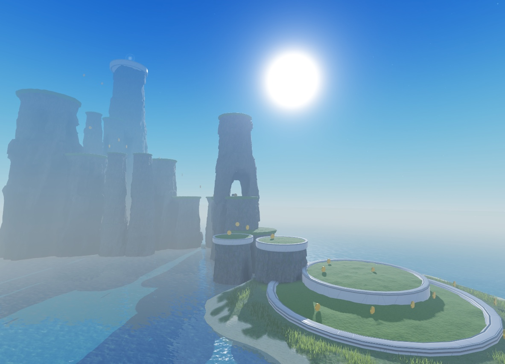
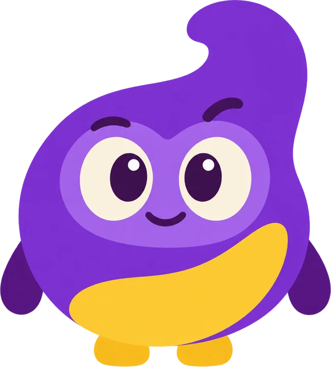
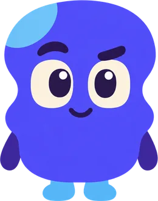
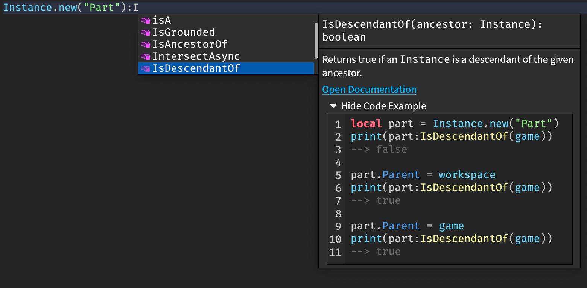
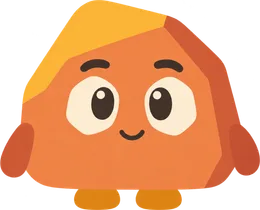
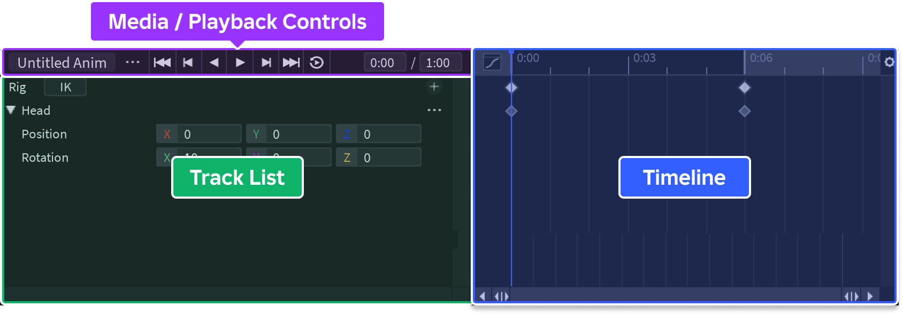

Raciocínio que faz sentido
Dividir desafios em etapas, testar soluções e entender por que algo funciona.
ESCOLA DE CRIADORES DE JOGOS
Dê vida às suas ideias no Roblox Studio. Aprenda a construir mundos, programar e criar seus próprios jogos, com aulas presenciais ou online e uma plataforma para continuar praticando.


APRENDER FAZ PARTE DO JOGO
No Roblox Studio, a tela vira espaço para experimentar ideias. Você aprende como cenários, personagens, interfaces e programação se conectam para dar vida a um jogo.
Com aulas presenciais e online toda semana e material completo com videoaulas, o aprendizado continua além da aula. Um caminho para sair do “como isso funciona?” e chegar ao “olha o que eu consegui fazer!”.
Aulas todas as semanas, nas duas modalidades.
Conteúdo de apoio para revisar e continuar aprendendo.
Dividir desafios em etapas, testar soluções e entender por que algo funciona.
Explorar a criatividade construindo mundos, experiências e histórias próprias.
Aprender com os erros e desenvolver autonomia a cada nova criação.
LEVEL UP ACADEMY
Uma plataforma própria para acompanhar o curso, retomar o conteúdo e colocar as ideias em prática. Tudo em um só lugar.
Qual será a descoberta de hoje?

Ilustração dos recursos da plataforma
Aulas, materiais e videoaulas para revisar o que foi aprendido e continuar explorando.
Atividades e um laboratório de código para experimentar ideias e exercitar a lógica.
Quiz ao vivo e Torta na Cara tornam a revisão do conteúdo uma experiência em turma.
Trilhas organizadas e acompanhamento do progresso para enxergar a própria evolução.
ENCONTRE SEU JEITO DE CRIAR
A criação pode começar de muitos jeitos.
Explore o que desperta sua curiosidade
dentro do Roblox Studio.


Dar vida às ideias com lógica e Luau, a linguagem usada no Roblox. Criar regras, desafios e interações.
LÓGICA + CÓDIGO

Criar menus, botões e telas que ajudam o jogador a entender e aproveitar cada experiência.
INTERFACES + DESIGN
Construir mapas e cenários. Explorar espaço, iluminação e composição para criar mundos marcantes.
CENÁRIOS + CONSTRUÇÃO
Explorar formas, volumes e composição de objetos tridimensionais dentro do Roblox Studio.
FORMAS + DIMENSÃO

Dar movimento a personagens e objetos. Trabalhar poses, tempo e expressão no editor de animações.
MOVIMENTO + EXPRESSÃOExemplos ilustrativos do Roblox Creator Hub · Roblox Creator Documentation · CC BY 4.0. Cenário com recorte de enquadramento. Não são projetos de alunos.
Uma base para experimentar, descobrir interesses e começar a construir projetos próprios. Qual será o primeiro passo?
No mercado de desenvolvimento de jogos, programadores, designers de interfaces, builders, modeladores 3D e animadores colaboram para criar experiências. Explorar essas áreas na prática ajuda a descobrir interesses e construir uma base para estudos e projetos futuros.
O curso é uma formação inicial. Carreira e renda dependem de estudo, prática, experiência e oportunidades; não há promessa de emprego ou ganhos.
Explore as áreas de criação no Roblox Creator HubSEU PRÓXIMO NÍVEL
Conte um pouco sobre você ou sobre quem vai aprender. Depois, continue a conversa pelo WhatsApp para conhecer os detalhes do curso e da inscrição.
A mensagem com suas respostas já estará preparada. Toque em enviar no WhatsApp para iniciar a conversa.